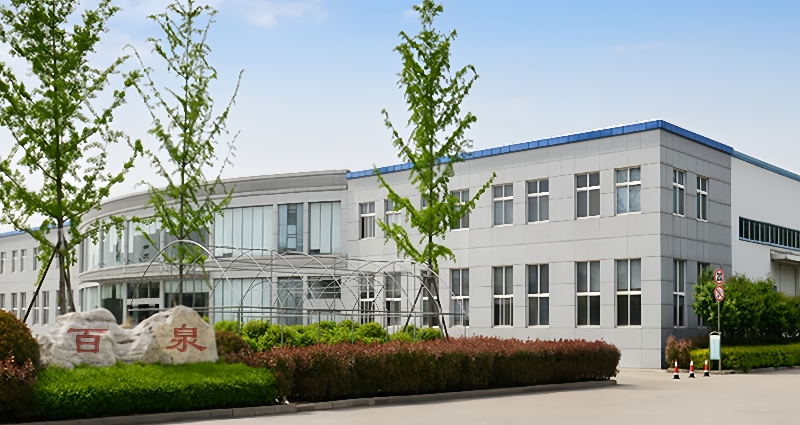
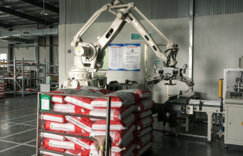
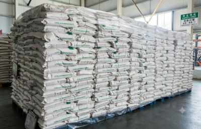
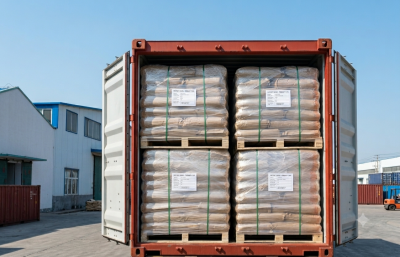
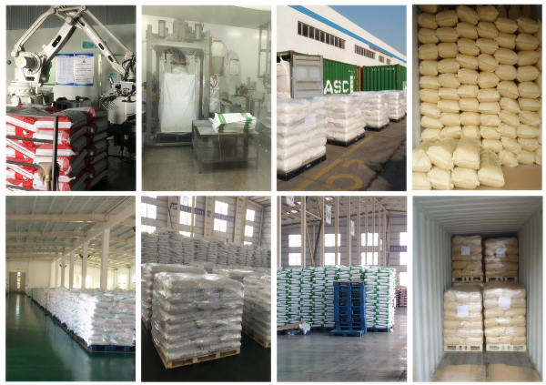

Jiangsu
Provincia de origen de Bespring y base clave para coordinar clientes, recursos productivos y acceso a la infraestructura exportadora del este de China.
Red de producción
Bases de producción colaboradoras en cuatro provincias chinas permiten un abastecimiento ágil, control de calidad coordinado y suministro de exportación para alimentación, piensos e industria.
Resumen de la red
Bespring Chemical trabaja con bases de producción colaboradoras en Jiangsu, Shandong, Sichuan y Hainan, China.
Esta estructura regional permite adaptar la categoría, el grado, las especificaciones y el pedido a los recursos productivos adecuados. También aporta flexibilidad cuando el cliente necesita una gama más amplia que la de una sola planta.
Bespring coordina la comunicación entre compradores internacionales y socios de producción seleccionados, desde la revisión de especificaciones y documentos hasta el embalaje y la planificación del envío.
Ver nuestros servicios de suministro para exportación
Cuatro regiones de producción
La red conecta los corredores industriales y de exportación del este con recursos productivos del oeste y el sur de China.
Provincia de origen de Bespring y base clave para coordinar clientes, recursos productivos y acceso a la infraestructura exportadora del este de China.
Región productiva colaboradora conectada con uno de los principales polos químicos y logísticos portuarios de China.
Región productiva colaboradora que amplía el alcance geográfico de la red y el acceso a recursos industriales del interior.
Región productiva colaboradora del sur de China que aporta mayor flexibilidad a la red de suministro.
La disponibilidad y el origen de producción adecuado se confirman para cada pedido según el grado, la especificación, la cantidad y el mercado de destino.
De la producción al envío
La fabricación es solo una parte de un suministro internacional fiable. Los análisis, el almacenamiento, el embalaje y el despacho se coordinan para cada pedido.

Los recursos productivos se seleccionan según el producto, grado, especificación y características del pedido.
Los análisis y la revisión de especificaciones permiten confirmar la conformidad antes de liberar y despachar el producto.

Los productos se organizan para un almacenamiento protegido, identificación por lotes y expedición eficiente.

El embalaje, la carga y el transporte se coordinan según el pedido y el destino del cliente.
Sistema de calidad
Los requisitos de calidad varían según el producto, la aplicación y el mercado. Nuestra función es definirlos con claridad y mantenerlos presentes durante la producción y la preparación de la exportación.
Ver certificacionesConfirmar nombre, grado, especificación, aplicación, embalaje y destino.
Asignar la consulta al recurso adecuado dentro de la red colaboradora.
Contrastar los análisis y documentos disponibles con los requisitos acordados.
Confirmar embalaje, lotes, documentos y transporte antes de la carga.

Mejora continua
Bespring anima a sus socios de producción a reforzar el control de procesos y la eficiencia operativa. Las áreas de mejora continua incluyen:
Preguntas de compradores
Respuestas útiles para equipos de compras y calidad que evalúan a Bespring como proveedor.
Trabajamos con bases de producción colaboradoras en Jiangsu, Shandong, Sichuan y Hainan, China.
Bespring opera mediante una red productiva colaboradora. Nuestro equipo coordina requisitos, documentación de calidad y exportación con socios de producción seleccionados.
La red cubre fosfatos e ingredientes y productos químicos seleccionados para alimentación, nutrición animal, tratamiento de aguas, limpieza industrial, minería y agricultura.
La gestión de calidad comprende la revisión de materias primas, controles de producción, análisis, confirmación de especificaciones y documentación antes del despacho.
Abastecimiento con confianza
Indique producto, grado, especificación, volumen y destino para que evaluemos una vía de suministro adecuada.